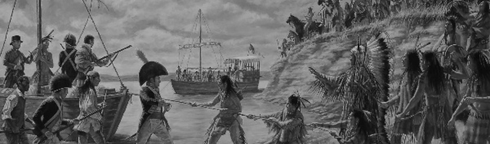

Otoe and Missouria oral histories begin in the region north of the Great Lakes. By around 1680, Europeans recorded the tribes in distinct areas of the mid-continent. In the 16th century, the Otoe, and Missouria broke away and moved to the south and west. The Otoe & Missouria people first came into contact with Europeans in the late 17th century via Jacques Marquette, the famous French explorer, and missionary.
By the late 17th century, the Missouria had settled near the Missouri and Grand rivers in what became Missouri. The Otoe settled along what is now the Iowa-Minnesota border. The state of Missouri and the Missouri River are both named after the Missouria Tribe, which controlled traffic and trade along the Missouri River and its tributaries. Trade was a vital part of Otoe and Missouria life for centuries. They traded with the Spanish, French and Americans for various goods. All three nations courted the Otoe and Missouria tribes for exclusive trading agreements.
The Otoe and Missouria Tribes were living together when they encountered Lewis and Clarks’ Corps of Discovery Expedition of 1803-1805 commissioned by President Thomas Jefferson.
A sequence of land cessation treaties (1817, 1825, 1830, 1833, 1836, 1854) had the effect of moving the tribes south and west. In the 1854 treaty, the tribes ceded their remaining land west of the Missouri River, and a reservation was created on the Kansas-Nebraska border. In 1876, the US Congress arranged the sale of 120,000 acres of the Otoe-Missouria reservation. It sold the remainder of the land in 1881, when Congress forced the Otoe-Missouria into Indian Territory in Oklahoma.
Despite these hardships, members of the Otoe-Missouria Tribe served patriotically and heroically in World War I, World War II, Korea, Vietnam, and other foreign campaigns. Women from Oklahoma’s tribal nations, including the Otoe-Missouria, served in the U.S. Coast Guard Women’s Reserves (“SPARS”) during World War II. They allowed male Coast Guardsmen who were working shore-side to fulfill sea duty. By releasing shore-side Coast Guardsmen for sea duty, these SPARS contributed to the Allied victory.